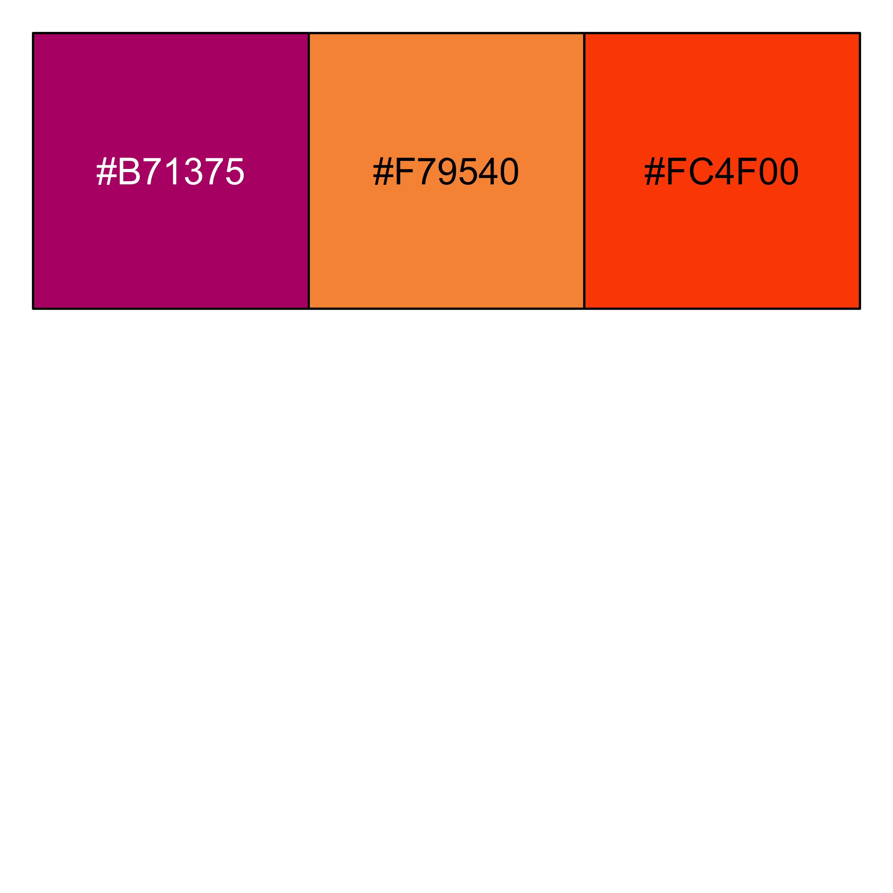

A Minimal Book Example
1
About
2
Data processing
2.1
m6a regulators
2.2
TCGA-PAAD dataset option 1
2.3
TCGA-PAAD dataset option 2
2.4
TCGA-PAAD dataset option 3
2.5
CPTAC-PDAC dataset
2.6
RJ dataset
Published with bookdown
CYZ-SMAD4-m6A-demo
CYZ-SMAD4-m6A-demo
Dongjie Chen
2023-12-06
Chapter 1
About
SMAD4/m6a项目-曹易之
SMAD4突变/低表达与较高的m6a水平相关
参考文献：DOI: 10.1186/s12943-021-01408-5
数量： 2*(0.5 Figure)
转录组水平
多数据集验证
如果突变做不出来，可以用突变+低表达
m6a评分
Palette
三种颜色 (优先) ,前两种双色首选 #B71375 #FC4F00 #F79540
